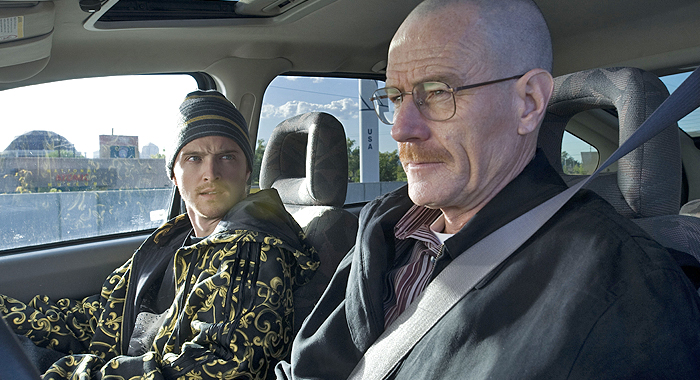
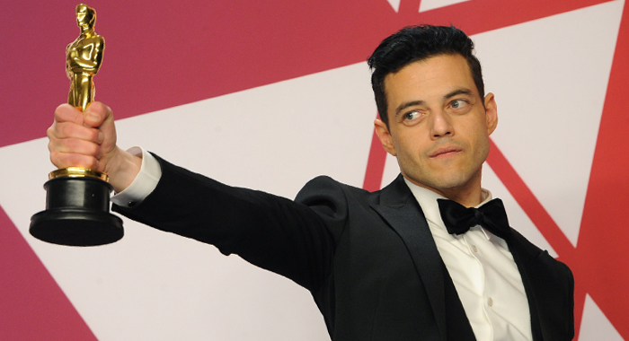

JOKER LIKELY TO GET SEQUEL FOLLOWING BILLION DOLLAR BOX OFFICE

The super villain origin story Joker is continuing its global box office success, which last week included reaching the $1 billion mark, making it the highest-grossing R-rated film ever. The success of Joker is made even more astounding when one considers that it had a relatively modest budget of just $55 million (considering superhero movies frequently cost upwards of $100-200 million, or sometimes more). So, it probably wasn’t particularly surprising when the news broke this week that Warner Bros. was developing a Joker sequel, but as it quickly turned out, some aspects of the story were disputable. It was reported that Todd Phillips had pitched Warner Bros. on a new slate of “gritty” DC Comics origin stories, but Phillips himself disputed how it was being interpreted, offering some clarification on what actually transpired. That, however, hasn’t stopped writers from speculating what other DC Comics villains could get Joker-esque origin stories (the obvious answer is usually Lex Luthor). As for the Joker sequel, that project is also inspiring a lot of theories, including a premise that would actually introduce another Joker who would become Batman’s villain. Warner Bros. has not announced a release date for Joker 2, but it would probably be sometime after 2021, when the studio will release The Batman (6/25/2021) starring Robert Pattinson. And speaking of which, The Batman director Matt Reeves announced via Twitter on Friday that John Turturro has joined the cast as Gotham mobster Carmine Falcone, previously played by Tom Wilkinson in Christopher Nolan’s Batman Begins.
JESSE PINKMAN WILL CONTINUE BREAKING BAD IN SEQUEL FILM

One of the recurring themes throughout 2018 has been about Emmy-winning TV dramas getting their own movies. The Downton Abbey movie is currently filming, and this week production began on the Deadwood movie, with pretty much the entire cast returning. (Farther down the road is The Many Saints of Newark, the prequel to HBO’s The Sopranos, which was announced in March.) The Sopranos won an Emmy for Outstanding Drama Series, and Deadwood and Downton Abbey were both nominated in that category (and won in others). Breaking Bad also won in that category twice, and this week we learned that filming is about to begin on a movie that will be a direct sequel to the events of the series finale episode. Breaking Bad executive producer Vince Gilligan wrote the movie, which is listed as starting production in New Mexico in mid-November under the working title Greenbriar. Aaron Paul will be returning as Jesse Pinkman in the film, described as “the escape of a kidnapped man and his quest for freedom.” When we last saw Jesse Pinkman in Breaking Bad, he had been kidnapped by a Neo-Nazi gang and had just begun his escape from them. It’s not yet known if the Breaking Bad movie is being made to air on AMC, or if it will receive a theatrical release. It’s also not known which other Breaking Bad cast members might return.
RAMI MALEK WILL PLAY THE NEXT BOND VILLAIN

The Academy Awards may ostensibly be about rewarding “art,” but the acting winners in particular often land big roles immediately after. This year, that was true for both of the male actors (maybe next week, Regina King and Olivia Colman?). Before his Academy Award-winning portrayal of Freddie Mercury in Bohemian Rhapsody, Rami Malek was best known as the star of TV’s Mr. Robot, but he was confirmed this week for a major role in one of Hollywood’s most lucrative film franchises. Malek is now in final negotiations to star in the upcoming James Bond film, which will be Daniel Craig’s fifth outing as 007. He will play the film’s main villain, who is believed to have roots in North Africa, due to both his Egyptian heritage and that of the previous actor in talks for the role, Said Taghmaoui, who is Moroccan. Malek is the first new actor to be announced to join the franchise, with Spectre co-stars Ralph Fiennes (M), Naomie Harris (Moneypenny), Lea Seydoux (Madeleine Swann), and Ben Whishaw (Q) expected to return. Cary Joji Fukunaga (Jane Eyre, Beasts of No Nation, season 1 of True Detective) will direct James Bond 25, which is scheduled for release on April 8, 2020 (with no current competition). Rami Malek will also voice Chee-Chee the gorilla in next year’s The Voyage of Doctor Dolittle (1/17/2020), starring Robert Downey Jr. (Note: there were also stories this week that Lupita Nyong’o was sought to co-star as the next “Bond girl,” but her team reportedly said, “it won’t work out with her.”)
THE MANDALORIAN FIRST REVIEWS: EPISODE ONE DELIVERS A THOROUGHLY SATISFYING STAR WARS EXPERIENCE
Highly-anticipated live-action Star Wars series The Mandalorian has finally arrived on Disney+ wowing fans and critics alike — those who were able to watch it anyway. The streaming service experienced some technical difficulties when it first went live, but once viewers were able to get through, the love started pouring in on social media.Starring Pedro Pascal (Game of Thrones) as the titular bounty hunter, the series was created by Jon Favreau (Iron Man), who serves as showrunner, and also stars Gina Carano, Carl Weathers, Werner Herzog, Nick Nolte, Emily Swallow, Taika Waititi, Giancarlo Esposito, Omid Abtahi, and Ming-Na Wen. Episode one was directed by Dave Filoni.Critics weren’t given advance screeners for the series, so many of them reported on their reporting, noting that they rose early to watch episode one and then file their reviews.
Here’s what the sleepy critics are saying about episode 1 of The Mandalorian.
UPCOMING TV FANTASY SERIES THAT COULD BE THE NEXT GAME OF THRONES
TV is set for an onslaught of high-profile fantasy epics in the next few years, and we at Rotten Tomatoes can’t wait. Witness the buzz around The Lord of the Rings television series in development at Amazon — acquired for $250 million and expected to ultimately cost more than $1 billion — along with the Gormenghast series announced early last year by FreemantleMedia North America, and Netflix’s new take on the Arthur legend, Cursed. It’s a big change from the genre’s historical position in the medium.
It may be strange to think of it now, but Game of Thrones was a risky proposition when HBO first began development of the series, and its prospects were buoyed by the fact that its more fantastic elements appeared later in the narrative (we had to wait so long for those dragons). Prior to that, fantasy was relegated to syndicated fare like Conan the Adventurer and Hercules: The Legendary Journeys. Xena: Warrior Princess was an outlier in terms of quality storytelling, but its occasionally cheesy effects proved to the television executives that fantasy TV was too expensive, while other series proved it was often built on poor story standards. GoT changed that perception, even if the fantasy shows that emerged in its wake — The Shannara Chronicles and Shadowhunters for example — proved closer in story quality to the BeastMaster television series.
But The Lord of the Rings, Gormenghast, and Cursed are not the only promising fantasy series in development at the moment. A number of classic fantasy epics and novels will become television thanks to the power of streaming services like Amazon, cable options like BBC America, and other outlets that are worth spotlighting. There are also a few notable series not yet scooped up by the powers in television that we think should get the TV treatment as soon as possible. So here are 17 fantasy epics set to hit your screen soon and three more we hope will follow them.
EVERYTHING WE KNOW ABOUT GAME OF THRONES PREQUEL SERIES HOUSE OF THE DRAGON
The super villain origin story Joker is continuing its global box office success, which last week included reaching the $1 billion mark, making it the highest-grossing R-rated film ever. The success of Joker is made even more astounding when one considers that it had a relatively modest budget of just $55 million (considering superhero movies frequently cost upwards of $100-200 million, or sometimes more). So, it probably wasn’t particularly surprising when the news broke this week that Warner Bros. was developing a Joker sequel, but as it quickly turned out, some aspects of the story were disputable. It was reported that Todd Phillips had pitched Warner Bros. on a new slate of “gritty” DC Comics origin stories, but Phillips himself disputed how it was being interpreted, offering some clarification on what actually transpired. That, however, hasn’t stopped writers from speculating what other DC Comics villains could get Joker-esque origin stories (the obvious answer is usually Lex Luthor). As for the Joker sequel, that project is also inspiring a lot of theories, including a premise that would actually introduce another Joker who would become Batman’s villain. Warner Bros. has not announced a release date for Joker 2, but it would probably be sometime after 2021, when the studio will release The Batman (6/25/2021) starring Robert Pattinson. And speaking of which, The Batman director Matt Reeves announced via Twitter on Friday that John Turturro has joined the cast as Gotham mobster Carmine Falcone, previously played by Tom Wilkinson in Christopher Nolan’s Batman Begins.
NICOLAS CAGE TO PLAY NICOLAS CAGE IN MOVIE ABOUT NICOLAS CAGE
Just a couple of weeks ago, Ocbtober 29 marked the 20th anniversary of the release of Being John Malkovich (Certified Fresh at 93%), a movie that was “meta” before that word was even in common parlance. Given how well it was received, it’s a little surprising more films like it (Jean-Claude Van Damme’s JCVD, for example) haven’t been made, but we may finally get the mother of all meta films in the near future. After a surprisingly active auction, Lionsgate has won the rights to a “meta drama” called The Unbearable Weight of Massive Talent, about a famous Hollywood actor named Nicolas Cage. Lionsgate is now in talks with a famous Hollywood actor named Nicolas Cage to take on the role, who is described as being the star of Face/Off, Con Air, Mandy, Color Out of Space, and the upcoming Lionsgate “meta drama” The Unberable Weight of Massive Talent. Specifically, Cage will play a version of himself who is trying to get a role in Quentin Tarantino’s next film and who “also occasionally talks to an egotistical 1990s version of himself who rides him for making too many crappy movies and for not being a star anymore.” It is not yet known if Quentin Tarantino will cast Nicolas Cage in his next movie. Nicolas Cage will also reprise his caveman role in The Croods 2 (12/23/2020), and might return as the voice of Spider-Man Noir in Spider-Verse 2 (4/8/2022).